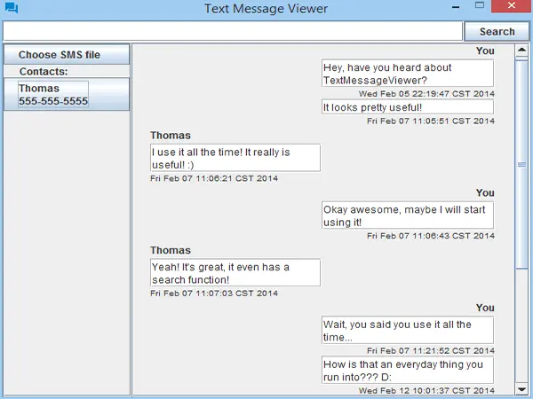

Professional Experience
After graduating from Rice University, I was employed at JP Morgan working on
their Chase Pay mobile application. I helped shape its initial public release in November 2016
and continued work on it until its 2.0 release.
At that point, I moved over to L Brands and focused my work on the PINK Nation and Victoria's Secret Android apps,
although I had to work on the Bath & Body Works app on occasion. My primary focus at L Brands was leading Android
development on an internal Shopping library that powered the shopping experience in both the VS and PINK applications.
I joined Zillow in May 2021 as a Senior SDE. I'm currently still working here as a Principal SDE in the Android space.
For more detailed information on my professional experiences, take a look at my profile on LinkedIn!
Articles
I have recently been trying to write more articles, mostly on programming and programming-related topics. If you are interested in reading them, please check them out at https://jdvp.me/articles/. I usually write about Android topics since I have more experience there than elsewhere but would like to branch out more into other topics in which I am more of a hobbyist, such as Jekyll or scripting on a NAS.
I have set up commenting on the articles so please feel free to ask any questions or leave any feedback (even just on writing style if you'd like). The site should also work with atom-readers if you'd prefer to keep up-to-date that way.
Travel Blogging
On a less technical front, I've been fortunate enough to be able to visit Japan for a month per year for the last few years. I tried blogging about it so that I'd have a good record of what I was doing and to push myself a little to actually do things other than just visit Akihabara
I aggregate all of the travels blogs and whatever other personal blog stuff I have here: Personal Blog
Active Personal Projects
These are projects that I am actively engaged on and improving
jekyll-comments-google-forms
jekyll-comments-google-forms is a tool that enables free commenting functionality on Jekyll-generated static sites by leveraging Google Sheets as a backend.
If interested, take a look at the source code on the Github Project page or check the associated article for a more in-depth explanation.
Inactive Projects
These are projects that I am no longer working on for various reasons. If you happen to use any of them
though and have an idea for an update, feel free to reach out and let me know!
Notification Launcher
Notification Launcher is an Android app that allows scheduling of notifications for any app
on your phone. It also can be used to share reminders from other apps.
See the old release notes page
for more details.
Statistexts
Statistexts is an Android application that allows users to see how responsive their contacts
are and how they compare to each other.
See more details on its official website.
Animosaic
Animosaic is a web app that lets users create mosaics of images using the cover
art from multiple anime series. The duck mosaic above was made using the app.
You can check it out here!

TextMessageViewer
TextMessageViewer is a Java executable that allows users to view SMS backup
files generated by apps such as SMS Backup & Restore on their PC.
More info and download links can be found here.
Interests and Hobbies
Outside of development, my hobbies are largely otaku-centric type things. Watching anime, reading manga, and playing video games. In terms of games, I mainly play gacha mobile games these days (RIP) but I'm also into regular games as well, usually JRPGs. Some of my favorites are the Xenoblade series, Persona series, Elden Ring, etc.
In terms of my gacha game roster, I used to be big into Princess Connect (I'll never forgive Crunchyroll for the service discontinuation), Tales of Wind, and SAO Memory Defrag. These days I'm still playing Genshin Impact, Honkai Star Rail, sometimes ZZZ, and FGO and Azur Lane every once in a while.
If you need game or anime recommendations, let me know!